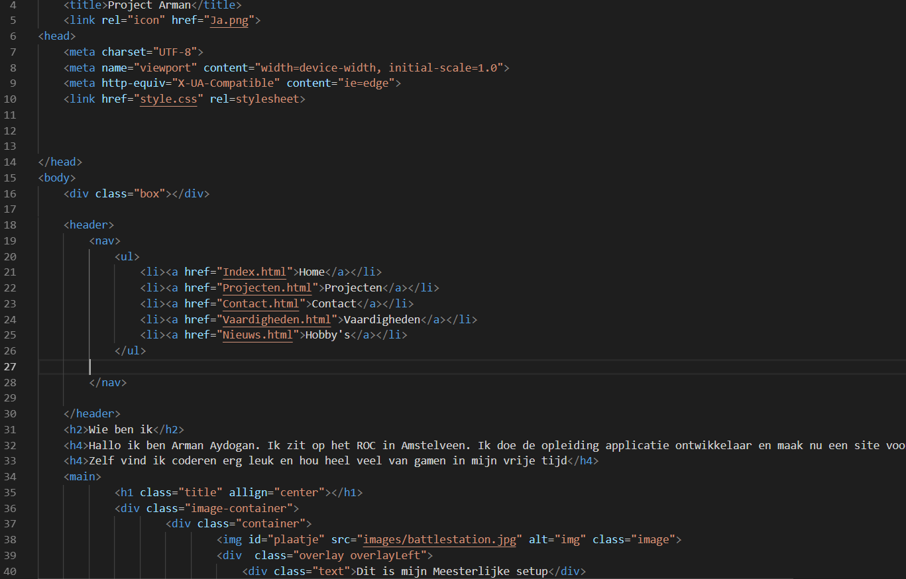
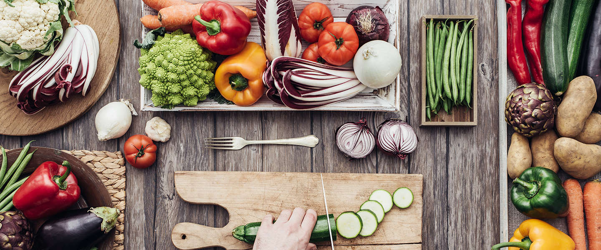

Hobby's
Ik heb veel hobby's maar er zijn natuurlijk maar een paar die ik als favoriet kies.
Als eerste hobby hou ik erg van programmeren. Ik vind het zo leuk omdat ik steeds iets nieuws leer. Als tweede hobby hou ik heel
erg van gamen het is voor mij mijn lievelings hobby om in mijn vrije tijd te doen. En als derde hobby heb ik koken staan.

